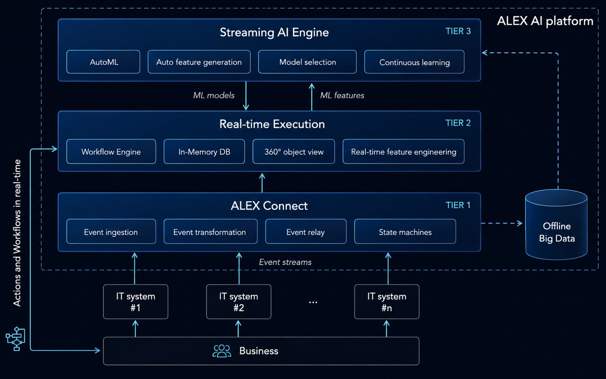
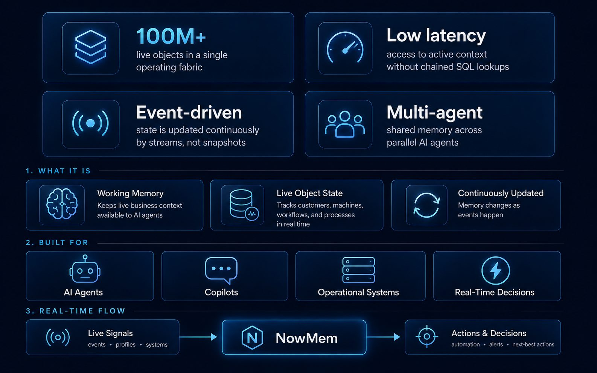

Backed by more than 20 years of experience in data, ML, AI, and real-time carrier-grade data systems, Telleqt has developed proprietary technologies built for environments where data changes every second and decisions cannot wait. We help customers apply them where they create maximum business value, especially where standard vendor solutions fall short.
Automated Machine Learning for Real-Time Data
ALEX is Telleqt’s real-time automated machine learning platform that turns live operational data into predictive intelligence and actionable decisions.
Working Memory Layer for AI Agents
NowMem is Telleqt’s real-time working memory layer for AI agents, helping them understand live business context, track changing states, and act across large-scale operational environments.
ALEX turns real-time data into object-level predictors and intelligent actions.

See how ALEX applies real-time machine learning to operational signals and turns changing equipment data into predictive maintenance intelligence.
Real-time working memory layer for AI agents and robots.
